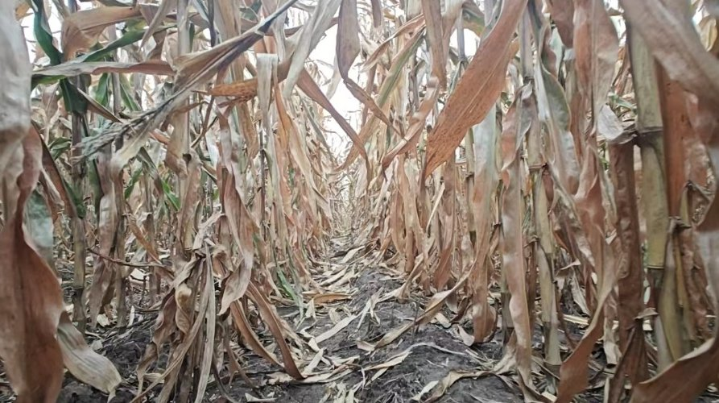

三维植被模型加载中
机器人前置相机 · 待加载
像素绿色植被分割 + 行中心 / ONNX 检测框
作业进度0%
导航 RMSE—
杂草处理（模式见下）0/55
成绩—
实拍参考：成熟期玉米田遮挡与叶片纹理（与仿真苗期不同）

图像来自您提供的田间照片；用于视觉观察与场景设计参考，不作为苗期标注或三维模型扫描。正在初始化：视觉控制将使用相机像素估计结果，不使用真实横向位置作为控制输入。
学生记录及实验对比
| 学生 | 实验 | 种子 | 速度 | RMSE | 分数 |
|---|
运行事件与系统说明
等待开始
连续自行车运动学，不是 Gazebo；Three.js 负责三维渲染。训练脚本与许可说明包含在完整工程中。